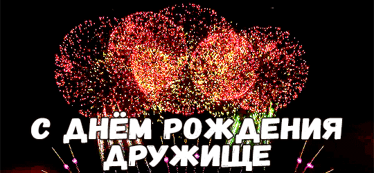

ой привет спасибо что тыкнула
Мозг вообще не соображает что писать если честно. Поэтому буду писать все что придет в голову.
Бро, я просто рада что ты у меня есть. Ты правда очень хороший человек и я рада что волей обстоятельств мы стали дружить. Мы пережили вместе очень многое. Школа, прогулки, ссоры, общие сеттинги, ролки, стихи, рисование, несколько неудавшихся отношений. И спустя столько лет мы все еще дружим. Ты все еще самый комфортный человек для меня, которому я могу рассказать все что у меня на душе. Ты не представляешь как я тебе благодарна. За всё. Спасибо тебе, бро.